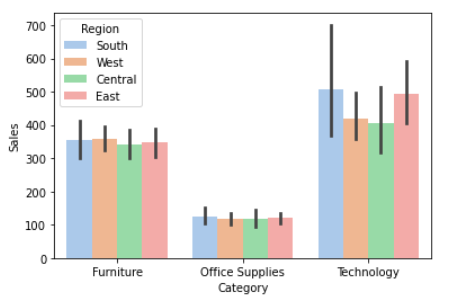
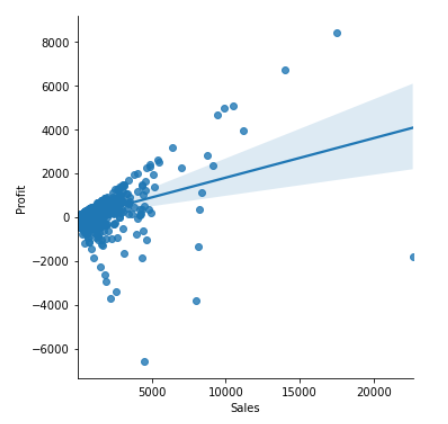
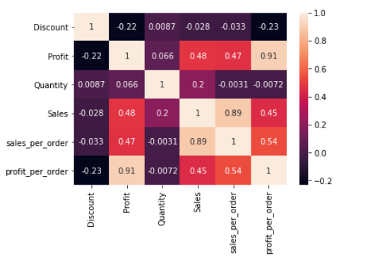
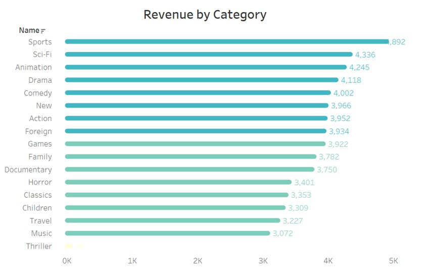
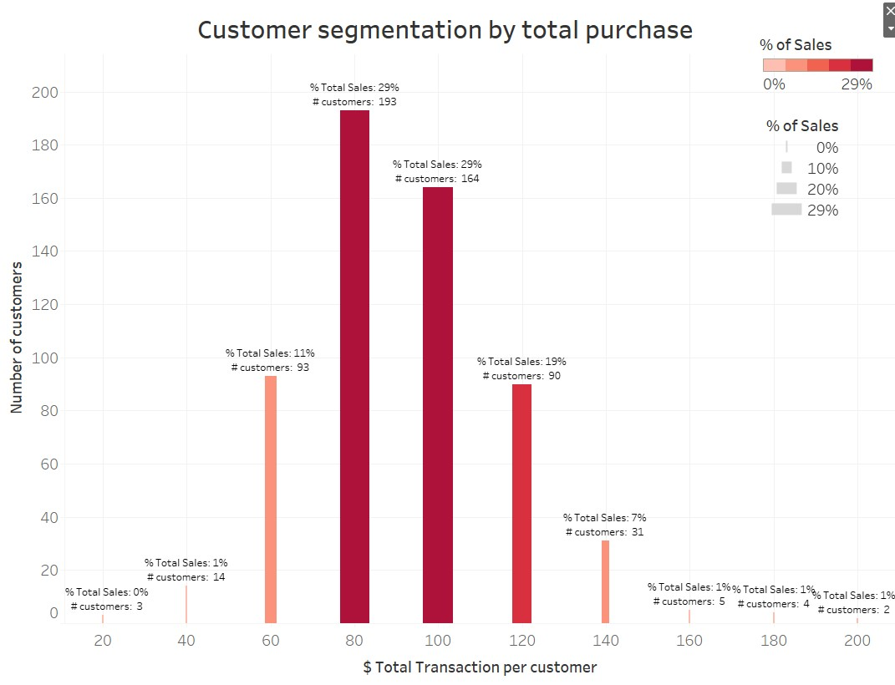

<!DOCTYPE HTML>
<!--
	Editorial by HTML5 UP
	html5up.net | @ajlkn
	Free for personal and commercial use under the CCA 3.0 license (html5up.net/license)
-->
<html>
	<head>
		<title> Portfolio SQL </title>
		<meta charset="utf-8" />
		<meta name="viewport" content="width=device-width, initial-scale=1, user-scalable=no" />
		<link rel="stylesheet" href="assets/css/main.css" />
	</head>
	<body class="is-preload">

		<!-- Wrapper -->
			<div id="wrapper">

				<!-- Main -->
					<div id="main">
						<div class="inner">

							<!-- Header -->
								<header id="header">
									<a href="index.html" class="logo"><strong>Carolina</strong> Pachon</a>
									<ul class="icons">
								
									</ul>
								</header>

							<!-- Content -->
								<section>
									<header class="main">
										<h1>Superstore Profit Analysis - Python Project</h1>
									</header>

									
									<h2>Motivation:</h2>
									<p>Sales have been always considered to be the engine that allows a business to go for miles and miles. However, how useful is to reach far distances when the journey has left the engine drowned? This is what happens when the focus is mostly on top line, and not how profit is being made.</p>
									<h2> Business Questions:</h2>
								
															<ol>
																<li>How to segment the data to better understand the behavior of profit?</li>
																<li>How does the behavior of sales affect profitability?</li>
																<li>Can any variable predict profitability?</li>
							
												
															</ol>
									<h2>Context</h2>
									<p>This is a project I did as part of a course in data analytics at Career Foundry. On this project I decided to use the SuperStore dataset which represents a sample of online sales for USA retailer store. It includes information of orders, multiple categories, and geographical locations. 
										This is an external and open-source dataset that was created by Tableau for educational purposes in order to familiarize its new users to visualizations. The data was not collected and was generated fictitiously to simulate a retail business. Therefore, extrapolating its behavior to generalize or draw conclusions about similar type of businesses is not recommended.</p>
									<h2>Dataset</h2>
									<p>The database used for this project can be found in the following 
										<a href="https://www.kaggle.com/juhi1994/superstore"> link.</a> </p>
								
										<ul class="actions">
											<li><a href="https://github.com/pachoncarolina/Superstore-Profit-Analysis" class="button primary">View the Scripts of the Project</a></li>
										</ul>		
									 	
									<ul class="actions">
										<li><a href="https://public.tableau.com/app/profile/carolina.pachon/viz/SuperStoredashboard_16312094322870/Story1" class="button primary">View the Storyboard in Tableau</a></li>
									</ul>
									<h2>Limitations</h2>
									<p>As mentioned above the data is based on fake realistic looking data, so it has not been collected from real transactions made by customers. Therefore, there are no ethical or unlawful matters compromising the security and privacy of users. Possible limitations are the restrictions of measuring the accuracy of the data against real data collected by internal sources, 
										meaning, we cannot estimate how close this data mimic the real world of online shopping. 
								
									<hr class="major" />
									<h2> 1. Data Exploration </h2>
									
									<p>These are some of the initial visualizations where we can see that most of the sales come from the technology category. From the scatter plot we can see the moderate relationship between sales and profit.    
										 </p>
										 
										 <div class="box alt">
											<div class="row gtr-50 gtr-uniform">
												<div class="col-4"><span class="image fit"></span></div>
												<div class="col-4"><span class="image fit"></span></div>
												
										 <p>One thing to note was that sales concentrated around $54.48, 
											 only 25% were higher than $209.9,
											and on average sales were $230.
											
											Given these statistics,  three  groups were created
											to further analyse profit: 
											
											
											<div class="table-wrapper">
												<table>
													<thead>
														<tr>
															<th>Group Name</th>
															<th>Description</th>
															
														</tr>
													</thead>
													<tbody>
														<tr>
															<td>Low Purchases</td>
															<td> Purchases less than $55 </td>
															
														</tr>
														<tr>
															<td>Medium Purchases</td>
															<td> Purchases between $55-$230</td>
															
														</tr>
														<tr>
															<td>Big Purchases</td>
															<td>  Purchases above $230 </td>
														</tr>
														
													</tbody>
													<tfoot>
														<tr>
															<td colspan="2"></td>
															
														</tr>
													</tfoot>
												</table>
											</div>
		
									
										 
									<div class="row">
										<p> The heatmap allowed us to see how correlated the numerical variables were.  </p>
										 <span class="image fit"></span>

									
										 <span class="image fit"></span>

										<div class="col-6 col-12-small">
											<h3>2. Data Querying</h3>
											
											</p>Subqueries</p> 
											</p>Common Table Expressions</p>
											</p>Views
												</p>
										</div>
										<h3>Example of Queries - Which movies contributed the most/least to revenue gain? Which is the inventory for each movie? Which is the rental count for each movie?</h3>
										<div class="col-12">
											<pre><code">
	SELECT f.title, COUNT(DISTINCT i.inventory_id) AS number_copies, 				
	COUNT(r.rental_id) AS rental_count, 				
	ROUND(SUM(p.amount),0) AS revenue				
	FROM film f				
	JOIN inventory i ON f.film_id = i.film_id				
	JOIN rental r ON i.inventory_id = r.inventory_id				
	JOIN payment p ON r.rental_id = p.rental_id				
	GROUP BY f.film_id				
	ORDER BY SUM(p.amount) DESC;</code></pre>
										</div>
									</div>
									
									<hr />
									<h2> Data Analysis and Visualization</h2>
									<p>Analysis includes line chart to visualize evolution of sales, 
										customer segmentation based on spending, and a 
										cohort Analysis to measure lifetime interaction of customers throughout time
										 </p>
									<p>In this graph we can see the distribution of total sales by customer's purchase power that ranges from  $20 to $200.  We can also see the number of customers that are concentated in each range of purchase. 

										Loyal customers who made purchases over$140 only account for 10% of the revenue(7% +1%+1%+1%), while the gross of the revenue is  among those customers whose spending was between  $80 and $120 (29% +29%+19%).
					
										Instead of rewarding the most loyal customers, Rockbuster should focus where most of its business condense (customers with a higher spending of $80), meaning the PARETO CUSTOMERS. </p>
									<span class="image fit"></span>

									<p>In general, most of the categories share the same popularity except for the thriller genre. </p>
									<span class="image fit"></span>
								
									<hr class="major" />
									<h2>Final Recommendations</h2>
									<p>Rockbuster should redirect it's efforts towards the customers that represent most of its revenue, Pareto Customers. Just focusing on the best 10 customers won't make the business prosper or reach sales target easily. For this,  implementing  strategies of acquisition to expand the customer base will payoff better than encouraging loyal customers to rent more movies. </p>
									<p>For Rockbuster to transition from rental-based to a suscription-based businesss it needs to define  a flat rate princing model. These transition will imply changing its business model, for instance closing physical stores and developing strong  capabilities to stream online content. All of these changes suggest an initial heavy investmen and a complete disrupt on how Rockbuster operates.  </p>
									<hr class="major" />
							
									
								</section>

						</div>
					</div>

				<!-- Sidebar -->
					<div id="sidebar">
						<div class="inner">

							<!-- Search -->
								<section id="search" class="alt">
									<form method="post" action="#">
										<input type="text" name="query" id="query" placeholder="Search" />
									</form>
								</section>

							<!-- Menu -->
								<nav id="menu">
									<header class="major">
										<h2>Menu</h2>
									</header>
									<ul>
										<li><a href="index.html">Homepage</a></li>
										<li><a href="aboutme.html">About me</a></li>
										<li><a href="instacart.html">Python Project</a></li>
										<li><a href="Rockbuster.html">SQL Project</a></li>
										<li><a href="Influenza.html">Tableau Project</a></li>
										<li><a href="Gameco.html">Excel Project</a></li>
										
									</ul>
								</nav>

							

							<!-- Footer -->
								<footer id="footer">
									<p class="copyright">&copy; Untitled. All rights reserved. Demo Images: <a href="https://unsplash.com">Unsplash</a>. Design: <a href="https://html5up.net">HTML5 UP</a>.</p>
								</footer>

						</div>
					</div>

			</div>

		<!-- Scripts -->
			<script src="assets/js/jquery.min.js"></script>
			<script src="assets/js/browser.min.js"></script>
			<script src="assets/js/breakpoints.min.js"></script>
			<script src="assets/js/util.js"></script>
			<script src="assets/js/main.js"></script>

	</body>
</html>